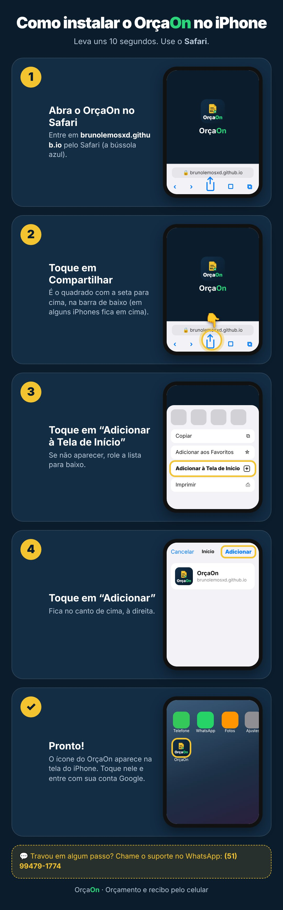

OrçaOn
Orçamento e recibo pelo celular
Instale no seu celular
É grátis e leva poucos segundos.
Depois toque em Instalar na janelinha que aparecer.
Instale pelo Chrome
No Chrome o OrçaOn funciona melhor e instala com um toque.
Abrir no ChromePrefere este navegador?
- Toque no menu ≡ no canto de baixo.
- Toque em Adicionar página a.
- Escolha Tela inicial.
Abra no Chrome para instalar
Você abriu o link dentro de outro aplicativo, e por aqui não dá para instalar.
Abrir no ChromeSe o botão não funcionar: toque nos três pontinhos do canto e escolha Abrir no navegador.
Instale no iPhone
- Toque no botão Compartilhar na barra do Safari.
- Role e toque em Adicionar à Tela de Início.
- Toque em Adicionar.
📷 Ver passo a passo com imagens

Abra no Safari para instalar
No iPhone, só dá para instalar pelo Safari.
- Abra o Safari e cole o link na barra de endereço.
- Toque em Compartilhar e depois em Adicionar à Tela de Início.
📷 Ver passo a passo com imagens
Abra no seu celular
O OrçaOn foi feito para o celular. Abra este endereço nele:
brunolemosxd.github.io/instalar
Usar no computador mesmo assim✅
Pronto, instalado!
O ícone do OrçaOn já está na tela do seu celular. Entre com sua conta Google e faça seu primeiro orçamento.
Abrir o OrçaOn- Orçamento e recibo com seu logo, Pix e assinatura
- Envie em PDF pelo WhatsApp
- 10 orçamentos e 10 recibos grátis para testar